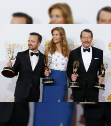

EVENTOS PRÓXIMOS

Pasan los años y Breaking Bad todavía sigue siendo uno de los programas de televisión elegido a la hora de armar las listas de “las que hay que ver sí o sí”. Sin dudas dejó una huella imborrable, tanto para sus fanáticos como para los actores. En este sentido, Bryan Cranston, el actor que interpretó a Walter White, dará una charla abierta en el canal de Youtube "BreakingTV".

La serie de televisión “Breaking Bad” fue reconocida el lunes en los premios Emmy como mejor serie dramática estadounidense por segundo año consecutivo, y también se llevó los tres principales premios a la actuación. “¡Santo cielo!” exclamó el creador de “Breaking Bad“, Vince Gilligan, al aceptar el Emmy, el mayor honor de la televisión estadounidense.

La mayoría de los que participan en este debate, afirman que la serie protagonizada por Walter White, fue la mejor, en su tiempo, sin embargo, Dark superó, en todos los niveles a dicha serie y ahora le toca ser la que lleve la corona de "mejor serie de la historia". Otros, aseguraron que los que opinan esto, primero deberían entenderle y luego comparar.

El Camino nos retrotrae al final de Breaking Bad, al usar un vehículo como algo simbólico. Walter ponía la llave y le suplicaba que lo conduzca a su casa. Jesse se moverá con éste hasta encontrar una suerte de alivio ante el ineludible trauma que lleva a cuestas. Sus vidas, otra vez, estarán entrelazadas.